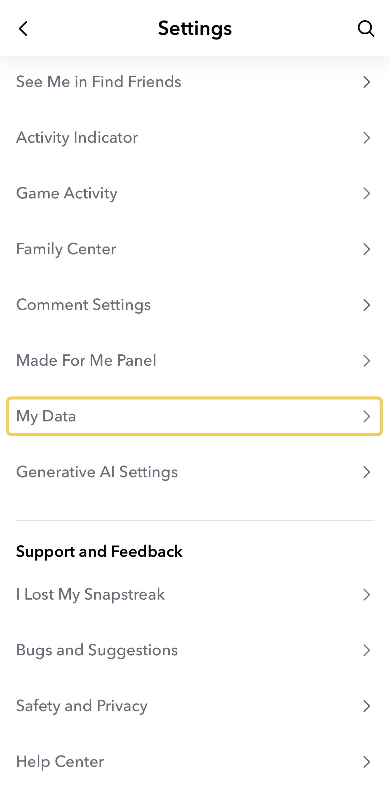
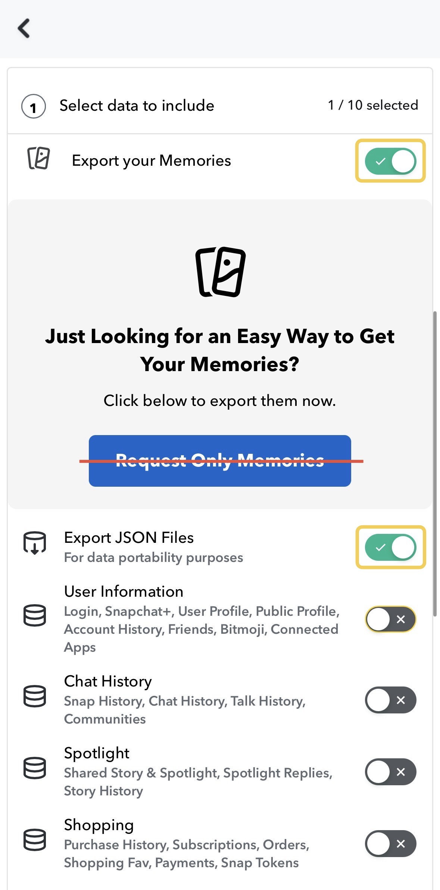
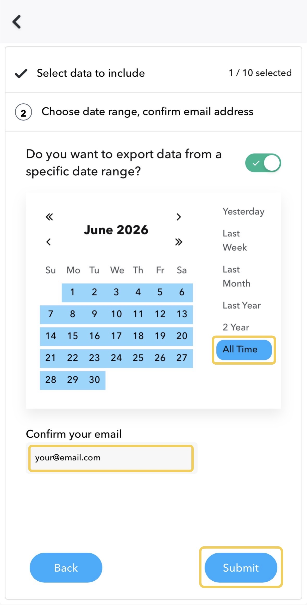
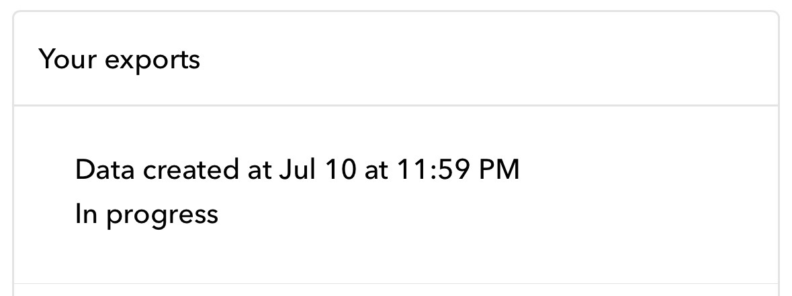
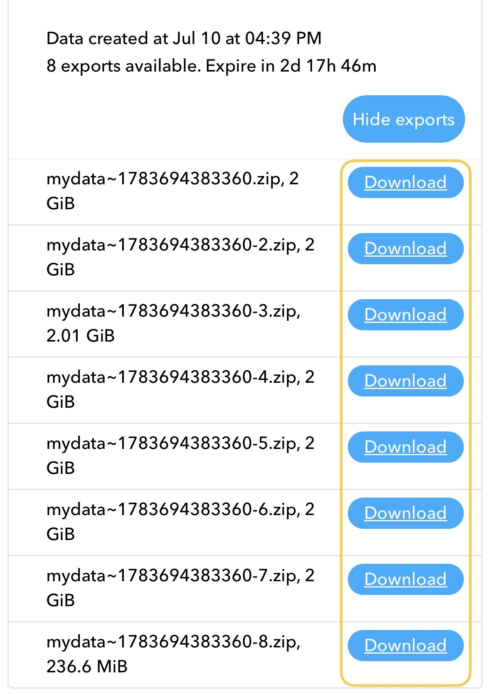

The complete export guide
How to save your Snapchat Memories to your camera roll
The whole path, tap by tap: how to export your Memories from Snapchat and bring them home. It works whether or not you ever install our app.
Snapchat Memories live in Snapchat, and only in Snapchat. There is no “select all, save to camera roll” button, and saving snaps one by one stops being an option somewhere around your fortieth memory. The real path is Snapchat’s official data export. It gets you everything at once, but it has two traps: one switch that silently decides whether your photos keep their dates, and a folder that arrives in scrambled pieces. The six steps below walk the whole thing, traps included.
Step by step
Export your Memories, start to finish
Open My Data in Snapchat
Tap your profile, open Settings (the gear, top-right), and scroll down to My Data. It also works in a browser at accounts.snapchat.com.

Turn on Memories and JSON files
Switch on both Export your Memories and Export JSON Files. The JSON files carry each memory’s date and location.
Skip the big Request Only Memories button: that shortcut leaves the JSON files out, and the import needs them.

Pick a range, confirm email, submit
Choose how much to export (All Time gets everything), check the email address is yours, then tap Submit.

Let Snapchat build it
Your request shows as In progress. Snapchat emails you when it’s ready, usually within a few hours, though a very large library can take a day.
No email? Check your spam folder, then check My Data → Your exports directly.

Download every .zip
Back in My Data, open Your exports and download each mydata~….zip to your iPhone (save it to Files). You might have one zip or ten. A bigger library just means more parts.
Grab them all; the links expire after a few days, so it’s best done soon, on Wi-Fi.

Import them and get your dates back
Open the zips in Memories: Save to Photos, pick what to import, and go. The real date, place and caption are restored to each memory, entirely on your device. (Prefer to do it by hand? The manual method below uses the same memories_history.json file.)
The app's import screen: the export loaded, memories grouped by month.
Why do my exported Snapchat Memories have no dates?
Because the dates were never in the photos. Snapchat stores each memory’s capture time and location in its own database, not in the image files, so the files in your export are stamped with the day the export was made, and their names are long randomised strings. Import them straight into your camera roll and five years of memories pile up on a single day.
The fix is the second switch from step 2. With Export JSON Files on, your export includes a file called memories_history.json, a plain-text record of every memory: the exact moment it was captured, and, where Snapchat knew it, the place. Anything that restores your dates, by hand or with an app, works from this file. If you already exported with the Request Only Memories shortcut, that button leaves the JSON out; just request the export again with both switches on. It costs nothing but another wait.
Where did the text on my snaps go?
Captions, doodles and stickers arrive in the export as separate image files: transparent overlays split off from the photos and videos they were drawn on. Your snap of a sunset and the “last night of the trip 🥲” you wrote across it are two different files, and nothing in the folder tells you they belong together.
They can be recombined: each overlay composites exactly over its media file. Doing it manually means matching pairs by filename and layering them in an image editor: workable for ten memories, grim for two thousand. This is one of the two jobs the app automates: it pairs every overlay with its snap and bakes it back in, photos and videos both.
How do I fix the dates manually?
If you’re comfortable on a computer, you can do this yourself with free tools, and this guide is useful to you either way. The recipe:
- Unzip all the export parts into one folder on a computer.
- Open
memories_history.jsonand note the structure: each entry has aDate, a media type, and a reference that ties it to a file in the folder. - Use a metadata tool such as ExifTool (free, command-line) to write each entry’s date into the matching file’s
DateTimeOriginalfield. People have published scripts for exactly this; search for “exiftool snapchat memories_history”. - Import the folder into your photo app. With the capture dates written into the files, photos sort themselves into the right years.
What this doesn’t get you: locations on the map (also in the JSON, but fiddlier to write), overlays baked back in, and any comfort on an iPhone: the recipe really wants a computer. That gap is why the app exists: Memories: Save to Photos does the dates, the places and the captions in one pass, on the phone, and the first 100 memories are free so you can check the result against this guide before paying anything.
When is Snapchat deleting Memories?
In late 2025 Snapchat announced that Memories are no longer unlimited: free accounts keep a set amount of storage (5 GB at the announcement), and anything beyond that requires a paid storage plan. Snapchat has said over-limit memories are kept in temporary storage for a grace period, but the era of “it’ll just be there forever, free” is over, and terms like these can change again.
You don’t need to panic, and this page won’t pretend you should. But the honest conclusion is: the only copy of your memories that is unconditionally yours is the one in your own photo library. The export takes an evening. It’s worth the evening.
For the full picture of the storage cap and what to do about it, see Snapchat’s 5GB Memories limit. Or, if you’re deciding between paying Snapchat and keeping your own copy, see the three options compared.
How do I sort the memories once I have them?
If you’ve restored the dates (by hand or with the app), sorting is free: your photo library orders everything by capture date, so the memories interleave with your camera photos, show up in your year views and in “On this day”, and, where locations were restored, appear on the map. There is nothing else to organise. That’s the point of fixing the metadata rather than fixing folders: the library you already use becomes the archive.
With the app the import itself is also built for large libraries: you select what to import by month rather than photo by photo, multiple zip parts are treated as one export, and a paused or interrupted import resumes without duplicating anything.
One switch so you never do this again
The export covers your past. For everything from today on, flip one setting in Snapchat: Settings → Memories → Save Destinations → Memories & Camera Roll. Every snap you save from then on lands in your photo library at the same time. Your history still needs the export, but only once.
“My Data”, “Export your Memories”, “Export JSON Files”, “Request Only Memories”, “All Time”, “In progress”, “Your exports” and “Save Destinations” are labels in Snapchat’s own interface, referenced here so you can find them. Memories: Save to Photos is not affiliated with Snap Inc.